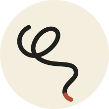

Loose Threads Instagram ↗Things I make.Not for sale.Not free either.
How it works
- 00
A drop is announced.
- 01
Reserve a set with a refundable deposit.
- 02
Come to the announced place and time.
- 03
Pick up the set and get your deposit back.*
- 04
Most of the set is for you. The rest is to gift to someone who’d enjoy it.
* Missed-pickup deposits are donated.
Loose Threads by Devi
Loose Threads is an experiment in releasing things I make into the world, so they reach people who’ll enjoy them.
Why this format?
Artsy artifacts can bring people joy. That sweet ache in the heart. That giddiness.
I make these things, and I want to spread that joy. But they bring joy to a particular kind of person — someone who notices this kind of stuff, cares about it, values it. I want the things I make to reach these people.
So I don’t want them to be free. But money is a distraction, and I don’t want to sell them either.
I also want low logistics and high dopamine.
After more than two years of mulling this over in the background, I’ve arrived at a format I want to experiment with.
That experiment is Loose Threads.
Learn more about me here.